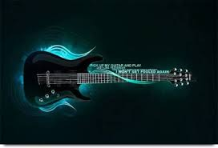
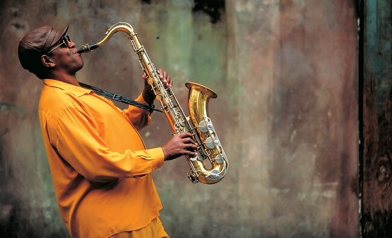

Ürünler
Telli Enstrümanlar
Klasik Gitar
.jpg)
- Klasik gitar (klasik gitar,naylon telli gitar veya İspanyol gitarı olarak da bilinir), klasik müzikte kullanılan gitar ailesinin bir üyesidir. Bağırsak veya naylondan yapılmış telleri olan bu akustik ahşap telli çalgı, metal telleri kullanan akustik ve elektro gitarın öncüsüdür. Klasik gitar on beşinci ve on altıncı yüzyılda İspanyol vihuela ve gittern'den türetilmiştir, daha sonra on yedinci ve on sekizinci yüzyıl Barok gitarına ve daha sonra on dokuzuncu yüzyılın ortalarında modern klasik gitara dönüşmüştür.
- Sağ elini kullanan bir gitarist için sol bacakta düzgün bir şekilde tutulur.
- Modern klasik gitar terimi bazen klasik gitarı en geniş anlamda klasik veya daha spesifik olarak erken gitar olarak da adlandırılan eski gitar formlarından ayırmak için kullanılır.
Elektro Gitar

- Elektro gitar veya elektronik gitar, sesini manyetikleri aracılığı ile elektrik akımına dönüştüren ve bir amplifikatör ile bu akımdan ses elde edilmesine olanak tanıyan gitar türüdür.
- Oluşturduğu sinyalin değiştirilebilir olması, ve zamanında bir devrim niteliği taşıyan yükseklikte bir sese sahip olması nedeniyle, kullanım alanı çok genişlemiş bir gitar türüdür.
- Elektronikteki gelişmeler ile tonal olarak sınırları 1960'lı yıllardan özellikleri ve çeşidi artan elektro gitarlar, özellikle 1980'li yılların başlarından itibaren üretilen süperstrat modeller başta olmak üzere günümüzün en bilindik enstrümanlardan biri haline gelmiştir.
Vurmalı Enstrümanlar
Davul

- Davul, bilinen en eski vurmalı çalgılardan biridir. Ahşap, maden ya da pişmiş topraktan silindirik bir gövdeye gerilen deriden oluşur. El ya da sopayla çalınır. Biçimi değişse de dünyanın her yerinde ve her toplumda kullanılan bir çalgıdır.
Bateri

- Bateri, davullar ve ziller başta olmak üzere vurmalı çalgılardan oluşan bir müzik enstrümanıdır. Şarkılarda ritim tutmaya yarar. Fransızcadan Türkçeye geçmiş bir kelimedir.
Üflemeli Enstrümanlar
Klarnet
- Klarnet (klarinet ya da gırnata), sert ve dayanıklı ağaçlardan genellikle de abanoz ağacından yapılan üflemeli bir çalgı türüdür. Bir çeşit sert kauçuk olan ebonitten, ayrıca metalden yapılanları da vardır.
Saksafon

- Saksofon veya saksafon, çoğunlukla koni ve “S” biçiminde pirinçten üretilen, ağzındaki kamış vasıtasıyla ses çıkaran bir çalgıdır. 1840'lı yıllarda, Adolphe Sax tarafından tasarlanmıştır.
Tuşlu Enstrümanlar
Piyano
.jpg)
- Piyano, İtalya'da Bartolomeo Cristofori tarafından 1700 yılı civarında icat edilmiş (tam olarak yıl belirsizdir) akustik, tuşlu bir müzik aletidir.[1] Piyanoda ses, teller vasıtasıyla elde edilir. Piyanonun tuşlarına basıldığında içindeki tahta çekiç tellere vurarak sesi oluşturur. Tahta çekicin tellere vurmasından dolayı piyano bazen vurmalı telli çalgı olarak da sınıflandırılır. Piyano klasik ve caz müzikte yaygın olarak kullanılır. Solo performanslar, ansambl, oda müziği, eşlik, bestecilik ve prova için oldukça uygun bir enstrümandır. Piyano taşınabilir bir enstrüman olmamasına ve genelde pahalı olmasına rağmen çok yönlülüğü ve aynı anda birçok yerde bulunma özelliği ile dünyanın en yaygın olarak kullanılan enstrümanlarından biridir.
Kuyruklu Piyano
.jpg)
- Kuyruklu Piyano: Klasik müzikte, orkestra dahilinde ve solo piyano resitallerinde kullanılan kuyruklu piyanonun ön bölümünde 88 tuştan oluşan bir klavye, arka bölümünde ise sesin güçlü bir şekilde ortaya çıkmasını ve yayılmasını sağlayan geniş bir kuyruk bulunuyor.